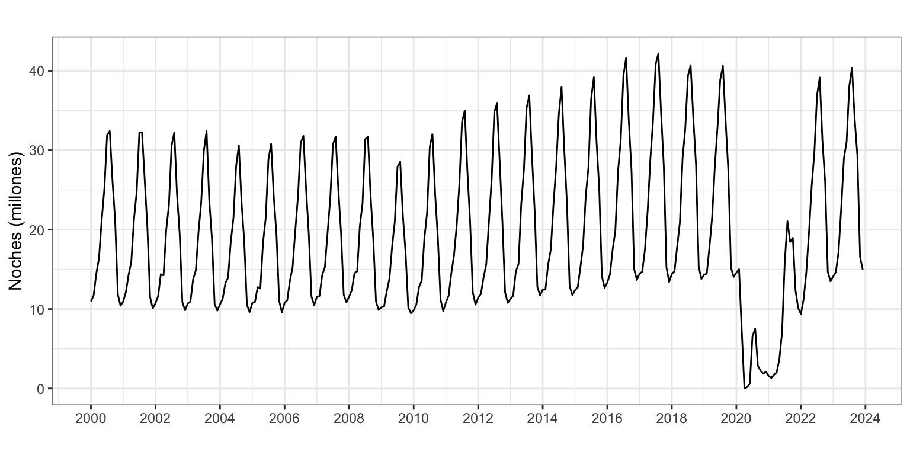
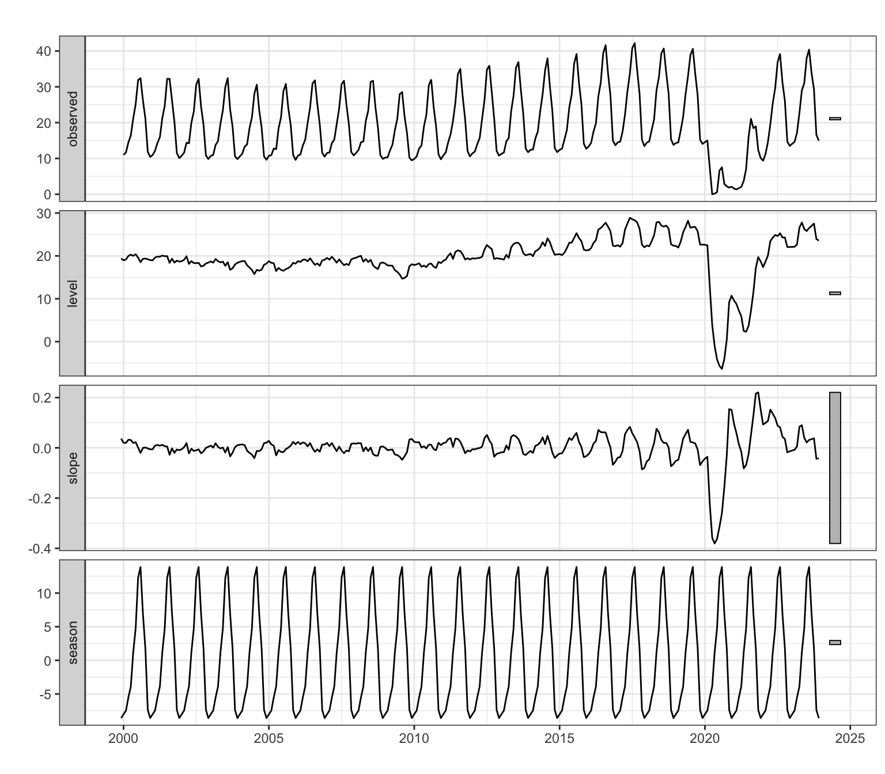
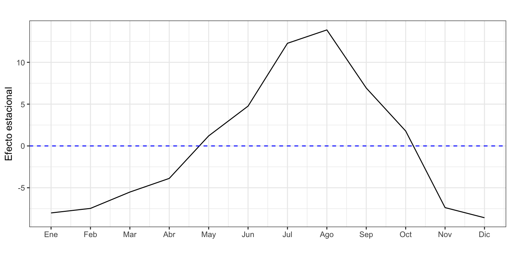
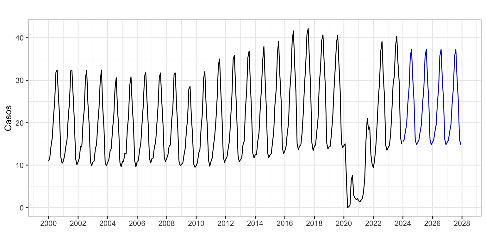
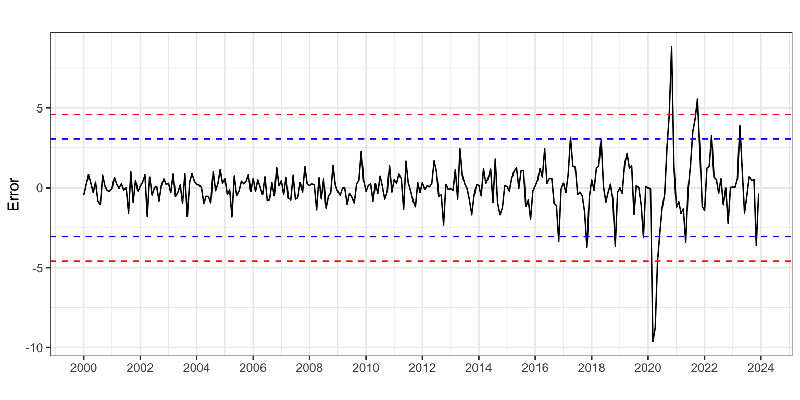
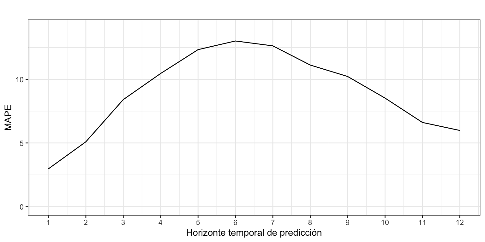
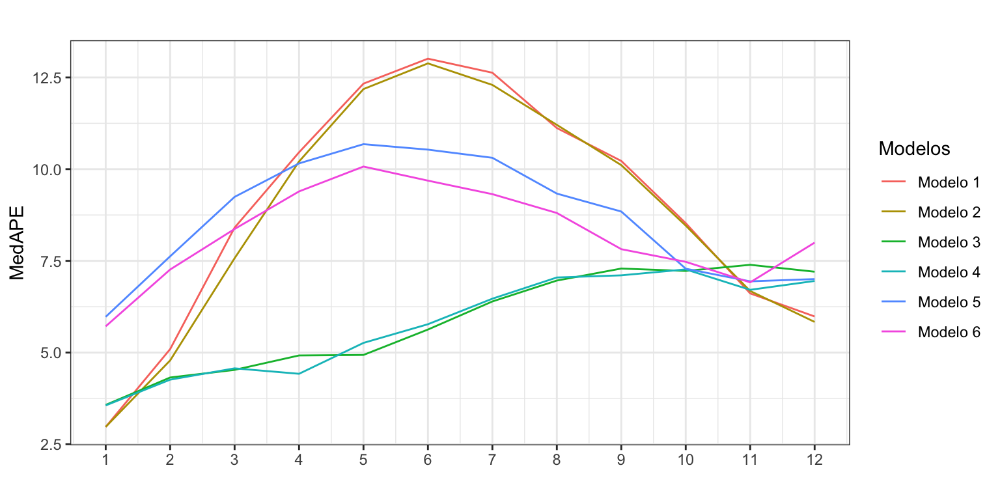

Pernoctaciones <- read.csv2("./series/Pernoctaciones.csv",
header = TRUE)
Pernoctaciones <- ts(Pernoctaciones[, 2] / 1000000,
start = 2000,
frequency = 12)Pernoctaciones en alojamientos turísticos de turistas extranjeros
Alisado exponencial
1 Introducción
Consideremos de nuevo la serie temporal correspondiente al número de pernoctaciones que los turistas extranjeros realizan en España en alojamientos turísticos autorizados (que llamaremos Pernoctaciones en adelante). Esta serie está disponible en Eurostat desde enero de 2000 hasta diciembre de 2023, un total de 24 años y 288 observaciones. La unidad original es número de pernoctaciones, así que dividiremos la serie por un millón para trabajar con millones de pernoctaciones.
La gráfica de la serie temporal (Figura 1) muestra en la primera década del presente siglo una tendencia suavemente decreciente en el número de pernoctaciones que, con el cambio de década, pasa a ser creciente. A finales de la década pasada se observa una caída en el número de pernoctaciones y en los últimos años el efecto de la Covid-19 y posterior recuperación. El esquema es multiplicativo.
autoplot(Pernoctaciones,
xlab = "",
ylab = "Noches (millones)",
main = "") +
scale_x_continuous(breaks= seq(2000, 2024, 2))

La serie de Pernoctaciones anualizada sería,
PernoctacionesAnual <- aggregate(Pernoctaciones, FUN = sum)
autoplot(PernoctacionesAnual,
xlab = "",
ylab = "Noches (millones)",
main = "") +
scale_x_continuous(breaks= seq(2000, 2024, 2)) 
Vamos a considerar la serie completa dado que el efecto de la Covid-19 ha quedado en el pasado y su efecto sobre la predicciones futuras ya debería ser mínimo, aunque dependerá el método de predicción utilizado. Para un análisis más detallado de como predecir series en las que recientemente se ha producido una fuerte perturbación véase la píldora Series interrumpidas.
En este análisis, las medidas de calidad basadas en la media de los errores estarán muy afectadas por la presencia de errores muy elevados durante el periodo de la Covid-19. Para resolver este problema usaremos dos estrategias. Por un lado, para obtener la calidad de ajuste usaremos solo las observaciones prepandemia (hasta diciembre de 2019). Por otro lado, para calcular la precisión de las predicciones extramuestrales usaremos la mediana de los errores.
2 Ajuste por Alidado de Pernoctaciones anuales
Vamos a aplicar la metodología de Alisado exponencial a la serie de pernoctaciones anuales.
(PernoctacionesAnualEts <- ets(PernoctacionesAnual))ETS(M,N,N)
Call:
ets(y = PernoctacionesAnual)
Smoothing parameters:
alpha = 0.1645
Initial states:
l = 209.6654
sigma: 0.2445
AIC AICc BIC
272.9453 274.1453 276.4794 Si se estima el modelo sin imponer ninguna restricción, ets identifica como modelo óptimo ETS(M,N,N) donde el parámetro \(\alpha\) es igual a 0.16. Es decir, un modelo sin pendiente y donde el nivel cambia lentamente.
Veamos la capacidad de ajuste del método. Como el efecto de la pandemia genera errores muy elevados en dos años y da lugar a medidas de calidad de ajuste poco interpretables, vamos a calcular las medidas de calidad usando solo los datos de los años 2000 a 2019, es decir los primeros 20 datos. Esto se consigue añadiendo el argumento test = 1:20 dentro de la función accuracy.
round(accuracy(PernoctacionesAnualEts, test = 1:20), 2) ME RMSE MAE MPE MAPE MASE ACF1
Training set 18.53 27.48 21.91 6.71 8.36 2.34 0.82El error porcentual cometido (8.4%) es muy superior al estimado para el método Ingenuo I (3.9%), así que el MASE es mayor que 1.
Las previsiones para los próximos cuatro años serían,
forecast(PernoctacionesAnualEts,
h = 4,
level = 95) Point Forecast Lo 95 Hi 95
2024 237.8245 123.8473 351.8016
2025 237.8245 122.2238 353.4251
2026 237.8245 120.6203 355.0286
2027 237.8245 119.0358 356.6131Como el modelo de Alisado estimado no tiene pendiente, las previsiones son constantes. Este resultado no debe sorprender puesto que, al margen de los años de la pandemia (2020 y 2021), el número de pernoctaciones en los últimos se ha mantenido constante (véase Figura 2).
3 Ajuste por Alidado de Pernoctaciones mensuales
Vamos ahora a aplicar la metodología de Alisado exponencial a la serie mensual de pernoctaciones.
3.1 Ajuste por Alisado exponencial
Si se estima el modelo sin imponer ninguna restricción, ets identifica como modelo óptimo ETS(A,Ad,A).
(PernoctacionesEts <- ets(Pernoctaciones))ETS(A,Ad,A)
Call:
ets(y = Pernoctaciones)
Smoothing parameters:
alpha = 0.9999
beta = 0.0203
gamma = 1e-04
phi = 0.8001
Initial states:
l = 19.4022
b = 0.0366
s = -8.5839 -7.372 1.788 6.9247 13.8752 12.2769
4.7636 1.202 -3.8813 -5.5148 -7.4679 -8.0106
sigma: 1.5792
AIC AICc BIC
1912.595 1915.138 1978.528 El modelo estimado tiene pendiente amortiguada, estacionalidad y residuo aditivos: \[y_{t+1} = l_t + \phi b_t + s_{t+1-m} + \varepsilon_{t+1}.\]
El valor de \(\alpha\) indica que el nivel de la serie varía constantemente en el tiempo. El valor de \(\beta\) y \(\gamma\) casi nulos indica que la pendiente y la componente estacional han evolucionado muy poco con el paso de los años (véase Figura 3). El parámetro de amortiguamiento \(\phi\) está su valor permitido más bajo, por lo que las previsiones se realizarán aplicando un fuerte amortiguamiento.
autoplot(PernoctacionesEts,
xlab = "",
main = "")

accuracy(PernoctacionesEts, test = 1:240) ME RMSE MAE MPE MAPE MASE ACF1
Training set 0.01107867 0.961168 0.6920091 0.167214 3.737123 0.760681 0.1622215La calidad del ajuste es bastante buena, con un MAPE de 3.7% y un RMSE de 961 mil pernoctaciones (o 692 mill si usamos el MAE). Además, según el MASE, el modelo de Alisado exponencial supone una mejora del 34% respecto del método Ingenuo con estacionalidad, que ya usamos para Pernoctaciones y tenía un MAPE del 4.6%. Por otro lado, el MPE indica que no hay sesgo y el ACF1 que la predicción por intervalo no está correctamente calculada.
Los últimos valores estimados del nivel y la estacionalidad, que corresponden a diciembre de 2023, nos permiten mostrar gráficamente la componente estacional más reciente (Figura 4).
TT <- nrow(PernoctacionesEts$states)
PernoctacionesEts$states[TT,] l b s1 s2 s3 s4 s5 s6 s7 s8 s9 s10 s11
23.55 -0.04 -8.58 -7.37 1.79 6.92 13.88 12.28 4.76 1.20 -3.88 -5.51 -7.47
s12
-8.01 componenteEstacional <- PernoctacionesEts$states[TT, 14:3]
ggplot() +
geom_line(aes(x = 1:12, y = componenteEstacional)) +
geom_hline(yintercept = 0, colour = "blue", lty = 2) +
ggtitle("") +
xlab("") +
ylab("Efecto estacional") +
scale_x_continuous(breaks= 1:12,
labels = c("Ene", "Feb", "Mar", "Abr", "May", "Jun",
"Jul", "Ago", "Sep", "Oct", "Nov", "Dic"))

El nivel de las pernoctaciones en diciembre de 2023 (última observación) es de 25.6 millones de noches y cada mes se estima una reducción de 42 mil pernoctaciones. El mayor número de pernoctaciones dentro del año tiene lugar en verano, en los meses de julio y agosto. En concreto, destaca el mes agosto con un incremento de 13.9 millones de pernoctaciones (s5) respecto de la media anual. Las pernoctaciones en invierno bajan drásticamente respecto de la media anual, observándose en diciembre 8.6 millones menos de pernoctaciones (s1). El efecto estacional estimado por el método de Alisado es muy similar al estimado durante la descriptiva de la serie.
3.2 Predicción
Si pedimos los valores de predicción y su intervalo de confianza al 95% para los próximos cuatro años, tenemos (numéricamente sólo se muestra el primer año):
PernoctacionesEtsPre <- forecast(PernoctacionesEts,
h = 48,
level = 95)
PernoctacionesEtsPre Point Forecast Lo 95 Hi 95
Jan 2024 15.51062 12.415449 18.60580
Feb 2024 16.02644 11.613676 20.43920
Mar 2024 17.95846 12.516028 23.40089
Apr 2024 19.57425 13.251739 25.89676
May 2024 24.64449 17.538507 31.75047
Jun 2024 28.19496 20.375101 36.01482
Jul 2024 35.69862 27.218434 44.17880
Aug 2024 37.29071 28.193255 46.38816
Sep 2024 30.33423 20.655194 40.01326
Oct 2024 25.19291 14.962578 35.42324
Nov 2024 16.02945 5.273956 26.78494
Dec 2024 14.81461 3.556837 26.07238autoplot(PernoctacionesEtsPre,
xlab = "",
ylab = "Casos",
main = "",
PI = FALSE) +
scale_x_continuous(breaks= seq(2000, 2028, 2))

Dado que el modelo estimado presenta una ligera tendencia decreciente muy amortiguada, las predicciones aparentemente se mantienen constantes en el tiempo. (Véase Figura 5.)
3.3 Análisis del error
La Figura 6 muestra el residuo del modelo.
error <- residuals(PernoctacionesEts)
sderror <- sd(error)
autoplot(error,
xlab = "",
ylab = "Error",
main = "",
colour = "black") +
geom_hline(yintercept = c(-3, -2, 2 ,3)*sderror,
colour = c("red", "blue", "blue", "red"), lty = 2) +
scale_x_continuous(breaks= seq(2000, 2024, 2))
fechas <- format(seq(as.Date("2000-01-01"), as.Date("2023-12-01"), by = 'month'),
"%Y-%m")
fechas[abs(error) > 3 * sderror][1] "2020-03" "2020-04" "2020-05" "2020-10" "2020-11" "2021-10"

Se observan seis meses en los que el residuo supera las tres desviaciones típicas, 5 en 2020 y otro en 2021, claramente asociados al efecto de la pandemia.
Vamos a repetir este ejercicio considerando solo los errores hasta diciembre de 2019 para identificar meses atípicos no relacionados con la pandemia. Ahora se observan seis meses atípicos: noviembre de 2016, 2017, 2018 y 2019, abril de 2017 y mayo de 2018. La causa de estos errores se localiza en el brusco incremento en las pernoctaciones ocurrido en 2016, seguido de una caída en 2018. Estos cambios tan seguidos impiden que el método de Alisado termine de ajustar bien los datos.
error <- window(error, end = c(2019, 12))
sderror <- sd(error)
fechas <- format(seq(as.Date("2000-01-01"), as.Date("2019-12-01"), by = 'month'),
"%Y-%m")
fechas[abs(error) > 3 * sderror][1] "2016-11" "2017-04" "2017-11" "2018-05" "2018-11" "2019-11"La prueba de Tukey identifica como atípicos solo algunos de los meses de noviembre ya identificados.
atipicos <- tsoutliers(error)
fechas[atipicos$index][1] "2016-11" "2017-11" "2018-11"
3.4 Validación
Ya hemos visto que el modelo comete un error próximo al 3.7%. Este valor es la estimación del error en la previsión intramuestral y a un periodo vista. A fin de poder estimar mejor la capacidad predictiva del modelo vamos a estimar el error de previsión extramuestral según el horizonte temporal.
Asumimos que se precisan diez años para hacer una buena estimación, \(k=120\), y que el horizonte temporal es un año, \(h = 12\) meses.
k <- 120
h <- 12
TT <- length(Pernoctaciones)
s <- TT - k - h
mapeAlisado <- matrix(NA, s + 1, h)
for (i in 0:s) {
train.set <- subset(Pernoctaciones, start = i + 1, end = i + k)
test.set <- subset(Pernoctaciones, start = i + k + 1, end = i + k + h)
fit <- ets(train.set, model = "AAA", damped = TRUE)
fcast<-forecast(fit, h = h)
mapeAlisado[i + 1,] <- 100*abs(test.set - fcast$mean)/test.set
}
errorAlisado <- apply(mapeAlisado, MARGIN = 2, FUN = median)
errorAlisado [1] 2.972417 5.093576 8.405491 10.459123 12.331484 13.011905 12.628651
[8] 11.120994 10.223398 8.527012 6.612335 5.983599ggplot() +
geom_line(aes(x = 1:12, y = errorAlisado)) +
ggtitle("") +
xlab("Horizonte temporal de predicción") +
ylab("MAPE") +
ylim(0, 14) +
scale_x_continuous(breaks= 1:12)

La Figura 7 muestra el error de previsión extramuestral según el horizonte de previsión. Se observa como para horizontes de predicción de uno a seis meses el error de predicción aumenta según lo hace el horizonte de predicción, pasando del 3% para predicciones a un mes vista hasta el 13% para predicciones a seis meses vista.
Sin embargo, para previsiones a más largo plazo el error de predicción decrece, hasta situarse en el 6% en las previsiones a un año vista.
4 Modelos alternativos
¿Podemos reducir el error extramuestral de previsión si cambiamos las opciones por defecto de ets o la serie a analizar? Por ejemplo, ¿mejoramos si aplicamos el método de alisado sobre el logaritmo de la serie o usamos el criterio de minimizar el error de las previsiones a dos meses vista, o trabajamos con las pernoctaciones por día?
La Tabla 1 muestra seis modelos alternativos para estimar y predecir la serie, donde el Modelo 1 sería el estudiado en el epígrafe previo.
| Modelo | Transformación | Especificación | Método estimación |
|---|---|---|---|
| 1 | Ninguna | AAdA | Máxima verosimilitud |
| 2 | Ninguna | AAdA | Mínimo error en previsiones a 12 periodos vista |
| 3 | Logaritmo | AAdA | Máxima verosimilitud |
| 4 | Logaritmo | AAdA | Mínimo error en previsiones a 12 periodos vista |
| 5 | Pernoctaciones por día | AAdA | Máxima verosimilitud |
| 6 | Pernoctaciones por día | AAdA | Mínimo error en previsiones a 12 periodos vista |
En concreto los comandos utilizados han sido:
- Modelo 1:
ets(x, model = "AAA", damped = TRUE) - Modelo 2:
ets(x, model = "AAA", damped = TRUE, opt.crit = "amse", nmse = 12) - Modelo 3:
ets(x, model = "AAA", damped = TRUE, lambda = 0) - Modelo 4:
ets(x, model = "AAA", damped = TRUE, lambda = 0, opt.crit = "amse", nmse = 12) - Modelo 5:
ets(x/monthdays(x), model = "AAA", damped = TRUE) - Modelo 6:
ets(x/monthdays(x), model = "AAA", damped = TRUE, opt.crit = "amse", nmse = 12)

La Figura 8 muestra el error de previsión extramuestral según el horizonte de previsión para los seis modelos. Aunque todos los métodos resultan razonablemente equivalentes en el largo plazo, en el medio y corto plazo las diferencias pueden ser significativas. Si queremos entrar en matices:
- Globalmente los modelos que ofrecen mejores previsiones son los modelos 3 y 4, que usan la transformación logarítmica.
- A corto plazo los modelo 1 y 2, que trabajan con la serie sin transformar, resultan tan competentes como los modelos 3 y 4.
- Analizar la serie de pernoctaciones por día no ofrece buenos resultados.
Es decir, la estrategia de trabajar con la transformación logarítmica de la serie de Pernoctaciones (en lugar de la serie original) mejora la calidad de las previsiones extramuestrales. ¡No hay que quedarse con lo inmediato!